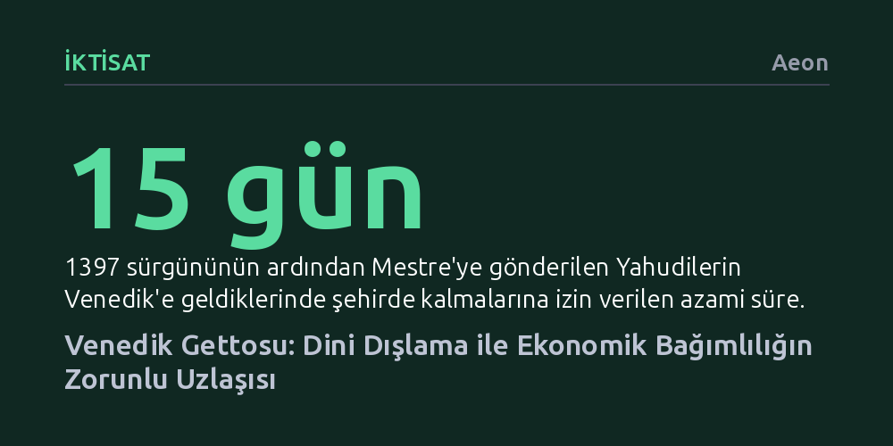

IKTISAT · Aeon · 2026-10-09
Venedik Gettosu, planlı bir tecrit projesi değil; kentin Hristiyan faiz yasağı nedeniyle muhtaç olduğu Yahudi kredi ağlarıyla dini önyargıyı uzlaştırma çabasından doğan pragmatik bir tavizdi. Ayrımcılığın kalıcı kurumları radikal adımlarla değil, geri döndürülebilir sanılan küçük tavizlerle inşa edilir.
Toplumsal dışlama ve gettolaşmanın büyük ideolojik projelerden ziyade, ekonomik çaresizlik karşısında atılan ve masum görünen küçük idari tavizlerle kalıcılaştığını gösterir.

Venedik Senatosu, 29 Mart 1516 tarihinde aldığı kararla şehirde yaşayan ve sonradan gelecek tüm Yahudilerin Cannaregio bölgesindeki geto novo adasına taşınmasını emretti. Daha önce bakır dökümhanesinin atık sahası olarak kullanılan bu ada, yüksek binalarla çevrili ve kanallarla tecrit edilmiş kasvetli bir yerleşimdi. Yahudiler buraya yerleştirilir yerleştirilmez dışarıya bakan tüm kapı ve pencereler örüldü, su yollarına setler çekildi ve Cannaregio'ya bağlanan köprünün iki ucuna kalın demir kapılar dikildi. Kapılar gün batımında kilitleniyor, sabahları marangona çanının çalmasıyla açılıyordu. Üstelik kanallarda gece gündüz devriye gezen dört muhafızın masrafı da doğrudan Yahudi cemaatine ödetiliyordu.
Yahudilerin ayrı bir mahallede yaşamaya zorlanması Avrupa için bütünüyle yeni bir uygulama değildi. Fransa ve Alman topraklarında yaklaşık üç asırdır benzer ayrıştırılmış yerleşimler mevcuttu; Venedik'in kendisi de 13. yüzyılda Girit'teki kolonisi Kandiye'de Yahudileri ayrı bir bölgeye kapatmıştı. Venedik'i benzersiz kılan unsur ise bu tecride verilen addı. İtalyancada dökmek anlamına gelen gettare fiilinden türeyen ve dökümhane atığını ifade eden geto sözcüğü, mekânsal bir ad olmaktan çıkıp soyut bir kuruma dönüştü. Nitekim 1562'de Roma'daki, birkaç yıl sonra da Floransa'daki Yahudi mahalleleri aynı isimle anılmaya başlandı.
Napolyon istilalarıyla İtalya'daki gettolar yıkıldıktan sonra bile sözcük dolaşımda kaldı; 19. yüzyıl sonunda Amerika'daki göçmen yoksulluğunu, 1939 sonrasında ise Nazi işgali altındaki Polonya'da soykırım öncesi esaret merkezlerini tanımlamak için kullanıldı. Oysa 1516'da kararı alan Venedikli senatörlerin amacı geleceğe küresel bir model bırakmak değildi. Ortada uzun vadeli bir master plan yoktu; tecrit kararı, savaş, göç ve iktisadi krizin doğurduğu zorunlu bir uzlaşının ürünüydü.
Yahudilerin Venedik lagünündeki geçmişi 10. yüzyıldaki Doğu Akdenizli tüccarlara kadar uzansa da asıl kalıcı yerleşim 14. yüzyıl ortasında başladı. Kara Veba salgınının tetiklediği katliamlardan kaçan Alman Yahudileri, can güvenliği ve ticari canlılık arayışıyla lagünün hemen karşısındaki Mestre'ye sığındı. Terzilik, hekimlik ve kuyumculuk gibi zanaatlarla uğraşsalar da asıl uzmanlık alanları rehin karşılığı borç para vermek oldu.
Bu iktisadi rol rastlantısal değildi. 12. yüzyılın ortalarından itibaren Katolik Kilisesi, Hristiyanların birbirine faizle borç vermesini kesin bir dille yasaklamıştı. Zengin tüccarlar aralarındaki büyük fonları ticari ortaklık kılıfına sokarak bu yasağın etrafından dolanabiliyordu. Ancak ailesine ekmek almak için iki dukaya ihtiyaç duyan yoksul bir denizcinin borçlanması doğrudan tefecilik suçu sayılıyordu. Dördüncü Laterano Konsili faiz yasağını yalnızca aynı dinden olanlar arasında bağlayıcı kıldığı için, Yahudiler Hristiyanlara makul faizle borç verebiliyordu. Böylece günümüzün maaş avansı kredilerine benzer küçük borçlar sağlayan Alman Yahudileri, toplumun alt kesimlerinin nakit ihtiyacını karşılayan vazgeçilmez bir mekanizmaya dönüştü.
Venedik elitleri bu kredilere mecbur kalsalar da Yahudi bankerleri Hristiyan toplumunun sağlığını tehdit eden bir inanç tehdidi olarak görüyor ve şehirde ikamet etmelerine izin vermiyordu. Ancak Cenova ile yapılan yıkıcı savaşın ardından ekonomi çöküp faizler fırlayınca pragmatizm baskın çıktı. 1382'de faizlerini düşürmeyi kabul eden tefecilere şehirde beş yıl oturma hakkı tanındı. Ne var ki ekonomik toparlanma sağlandıktan hemen sonra hoşgörü ihtiyacı azaldı ve 1397'de sözleşmeleri yenilenmeyen Yahudiler Mestre'ye geri gönderildi. Şehirde kalışları on beş günle sınırlandırıldı ve yakalarına sarı daire takma zorunluluğu getirildi. Buna rağmen kredi ihtiyacı bitmediği için Yahudiler Mestre'ye geçip süreyi sıfırlayarak Venedik'e dönmeye devam ettiler; şehir onları resmen kovsa da fiilen barındırmak zorunda kaldı.
15. yüzyıl ortasında Papa IV. Eugenius'un fermanıyla Avrupa genelinde yeni bir Yahudi karşıtlığı dalgası yükseldi. Gezici Fransisken vaizler, Yahudi tefecilere olan bağımlılığı ortadan kaldırmak amacıyla monti di pietà (şefkat bankaları) kurulmasını önerdi. Bağışlarla finanse edilen ve yoksullara faizsiz ya da sadece işletme giderlerini karşılayacak sembolik oranlarla borç veren bu sandıklar, İtalya'nın birçok kentinde Yahudilerin sürgün edilmesini hızlandırdı. 1475'te Trento'da yaşanan ayin cinayeti iftirasının ardından Venedik'in anakara topraklarındaki kentlerde de benzer sandıklar kurularak Yahudiler uzaklaştırıldı.
Venedik merkez yönetimi de bu tasfiyeyi uygulamaya hazırlanırken 1494'te İtalya Savaşları patlak verdi. Askeri harcamalarla sarsılan ve gıda fiyatları fırlayan cumhuriyet, nakit akışını sürdürebilmek için Mestre'deki bankerlerle yeniden masaya oturdu. 1503'te imzalanan imtiyaz sözleşmesiyle bankerlere geniş haklar verildi; hatta savaş tehlikesi durumunda Venedik'e sığınabilecekleri taahhüt edildi. Bu vaat masum bir pazarlık kozu gibi görünse de 1509 Agnadello Muharebesi'ndeki yıkıcı yenilgiyle acı bir gerçeğe dönüştü. Fransız ordusunun ilerleyişi karşısında yüzlerce Yahudi mülteci lagüne akın etti.
Lagünde tehlikeli bir tezat doğdu. Bir yanda halk ve fanatik vaizler ardı ardına gelen askeri yenilgileri ilahi bir ceza sayıyor, faturayı Yahudilere keserek mallarının yağmalanmasını istiyordu. Diğer yanda ise hazinenin ve piyasaların Yahudi sermayesi olmadan dönmesi imkânsızdı. Vakanüvis Marin Sanudo'nun günlüğünde teslim ettiği üzere, sokaklardaki yoğunluktan şikâyet edilse bile kimse bir şey yapamıyordu çünkü "onlara ihtiyaç vardı".
Yahudileri tamamen kovmanın devleti iflasa sürükleyeceğini anlayan Venedik hükümeti, sorunu onları sürmek yerine kontrol altına alma arayışına girdi. 1515'te kabine üyesi Giorgio Emo, Yahudilerin Giudecca adasında toplanmasını önerdi; böylece Hristiyanlardan yalıtılacak ama piyasalara yakın kalacaklardı. Ancak Yahudiler burada konuşlu paralı askerlerin şiddetine maruz kalmaktan çekinerek Murano adasını talep etti ve uzlaşma sağlanamadı.
Ertesi yıl İmparator Maximilian'ın Milano'yu işgaliyle anakaradaki panik büyüdü. Paskalya vaazlarında tansiyonun yeniden tırmanması üzerine senatör Zaccaria Dolfin, Cannaregio'daki eski dökümhane sahasını (geto novo) önerdi. Dolfin'in tezi açıktı: Yahudiler kovulamıyorsa ve serbest dolaşımları dini kaygılar nedeniyle istenmiyorsa, şehirden koparılmadan tek bir kapalı adaya hapsedilmeliydiler. Karar Senato tarafından onaylandı ve Temmuz 1516 itibarıyla Venedik'teki tüm Yahudiler adaya kapatıldı.
Getto başlangıçta savaş dönemi bitene kadar geçerli geçici bir güvenlik tedbiri olarak tasarlanmıştı. Fakat savaşların uzaması ve Venedik'in alternatif kredi mekanizmaları kuramaması bu kapatılmayı kalıcı kıldı. Üstelik Venedik'in ticari gücü zayıfladıkça getto genişletildi: 1541'de Osmanlı coğrafyasından gelen tüccarlar için Ghetto Vecchio, 1633'te ise Batı'dan gelenler için Ghetto Nuovissimo kuruldu. Geçici bir kriz yönetimi adımı olarak başlayan getto, Napolyon'un 1797'de şehri fethine kadar neredeyse üç asır boyunca ayakta kaldı.
Venedik Gettosu, fiziki duvarlarına ve demir kapılarına rağmen hiçbir zaman dış dünyadan bütünüyle yalıtılmış bir hücre olmadı. Kredi piyasası, ardından gelen uluslararası deniz ticareti ve hatta İbranice kaynaklara merak duyan hümanist aydınların entelektüel ilgisi, iki toplum arasında kesintisiz bir temas alanı yarattı. Gettolaşma, mutlak bir kopuşu değil; birbirine muhtaç olan toplulukların kurumsallaşmış çelişkisini temsil ediyordu.
Bu tarihsel tablonun modern dünyaya verdiği asıl ders, sürecin tedriciliğinde saklıdır. Getto, bir gecede hayata geçirilen büyük ve planlı bir ideolojik projenin değil; her biri o an için geri döndürülebilir ve geçici sanılan küçük idari tavizlerin, ekonomik mecburiyetlerin ve korkuların toplamıydı. Sürecin herhangi bir aşamasında Venedik yönetimi geri adım atabilir ya da başka bir yol seçebilirdi.
Bugün de önyargı ve dışlayıcı politikalar büyük sıçramalarla değil, kontrol dışı krizlerin yarattığı tedirginlik ortamında atılan küçük adımlarla meşruiyet kazanıyor. Sokaktaki bir slogan, duvardaki bir işaret veya geçici denilerek kabul edilen bir ayrımcı uygulama, benzer bir zihniyetin basamaklarıdır. Venedik Gettosu, en katı dışlama mekanizmalarının bile masum görünen küçük tavizlerle örüldüğünü ve bu adımların her birine anında karşı çıkılması gerektiğini hatırlatır.